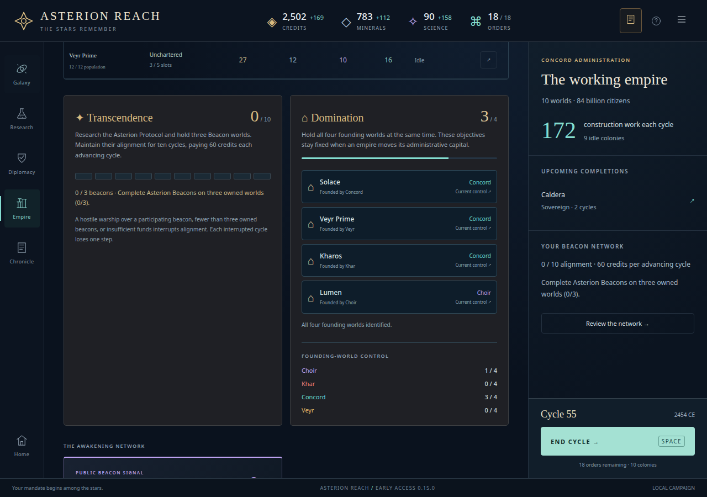
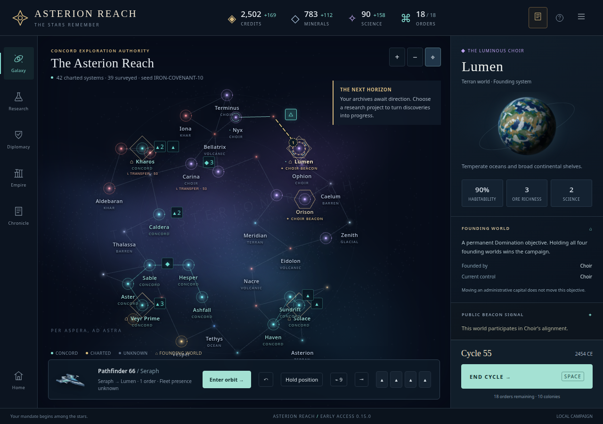
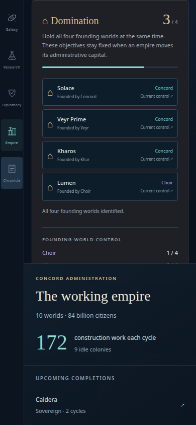
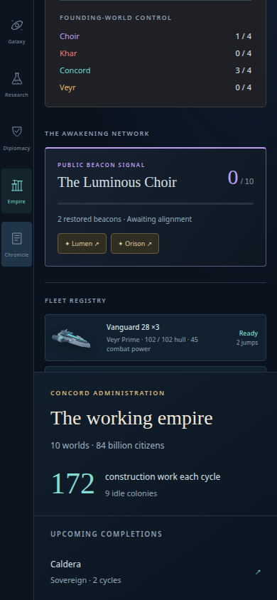

ASTERION REACH · STAGE16 · READ-ONLY ACCEPTANCE
Four enduring objectives
The completed cycle55 campaign now identifies the missing Domination target: Lumen remains under Choir control while the Concord holds the other three founding worlds.
No blocker found. Founding identity remains fixed when administrative capitals move; unidentified worlds remain anonymous and rival totals distinguish confirmed knowledge from complete control.
9Independent projection checks
4Initial UI cases, preserved separately
1Final legacy-selection boundary case
The final selection guard broadened only main.js after the first four UI checks. The final targeted case validates that change. Earlier checks retain their original hashes and are not claimed as rerun.
The actual remaining target

Unchanged actual completed IRON-COVENANT export,1280px. Keyboard inspection preserves the whole saved state.
Founding identity coexists with beacon, route and sovereignty information; no extra label row is added.Phone and fallback

390px, reduced motion and WebGL disabled. The top section shows all four objectives.
The lower section remains reachable by vertical scrolling; no horizontal overflow.Boundaries reviewed
- Ownership or completed survey recognizes a founding world. Contact or lane charts alone do not.
- Hidden ownership, fleets, geography and capital changes do not affect new ledger content or founding markers.
- Only self and contacted governments receive standings. Incomplete rival knowledge is labeled confirmed.
- Copied projections cannot modify the save. Inspection, navigation and keyboard activation preserve all saved fields.
- No new victory rules, logs, popups or persistent fields. Actual cycle57 remains4/4.
Evidence: projection checks · first UI phase · final boundary phase · hash manifest · method and reproduction.
Projection commit dfd109872e30ddab428969027a2e37b5320e849b. No ongoing WATCH files or hidden campaign state were accessed. All live UI sessions used isolated browser contexts and completed exports or labeled synthetic fixtures.